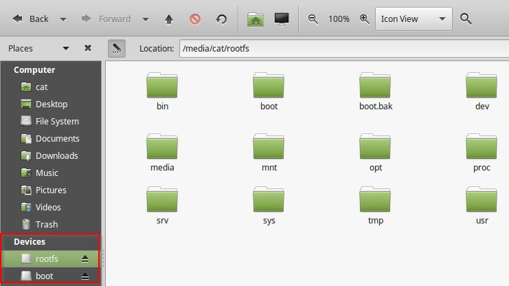

9 Transferencia de ficheros
Para hacer una transferencia de ficheros, necesitamos un lugar común entre nuestro Raspberry y nuestro PC.
Podemos hacer una carpeta compartida en el Linux de Raspbian instalando un servidor Samba para que nuestro PC lo vea ... o también podemos compartir una carpeta compartida en nuestro PC, añadir usuarios y permisos apropiados y depende si nuestro ordenador es Windows7, Windows10, Linux, Mac... todas estas opciones son muy interesantes, en Internet puedes encontrar tutoriales muy buenos y .... siempre hay fallos.
O dejarnos de ser tan tecnológicos .....
Opción sencilla A: utilizar el adaptador y la micro tarjeta de la Raspberry

A1.- En mi PC tengo LINUX
Pues mejor, ves las dos particiones de la micro tarjeta SD:
- boot
- rootfs
Create una carpeta en rootfs en la carpeta /home/pi y ahí guarda tus proyectos.

A2.- En mi PC tengo Windows
Pues sólo ves una de las dos particiones, almacena todo en la boot y luego en Rasbian por VNC pasa los archivos a la otra partición rootfs en la carpeta /home/pi:
Opción sencilla B: Utilizar un pendrive USB
Exacto, como un ordenador, grabamos lo que queremos en un pendrive, luego lo conectamos a la Raspberry y saldrá automáticamente el gestor de archivos:
Si no sale, lo tienes en /media/pi en este caso he insertado un pendrive llamado Jorge:
Opción C con VNC pues tengo la raspberry inaccesible
Por ejemplo está en Alphabot
Si estás conectado por VNC entonces hay una opción de transferir archivos:
Opción C1 de mi ordenador a la Raspberry
Vas a la parte superior de tu pantalla y aparecerá un menú de VNC de tu ordenador, pulsa en el botón de transferencia de archivos:
Opción C2 de la Raspberry a mi ordenador
Tienes que ir al icono de VNC negro superior derecha que hay en el escritorio de la Raspberry viéndolo a través del VNC de tu ordenador (sí, ya sé que es un poco lioso pero es fácil):
Opción C3 No quiero un archivo, quiero una carpeta entera
Pues no va a poder ser, VNC sólo admite archivos, pero existe un truco: comprimir.
Hay que tener en cuenta que VNC sólo permite formato ZIP, tar.. pero no rar que no lo admitirá:
Dentro de la Raspberry navegando con VNC puedes descomprimir el archivo con el botón derecho
O sea, nuestro consejo es elegir la opción menos complicada que veas.
Divagando un poco...
Esto de que el camino sencillo es lo mejor, me recuerda a una historia en la carrera espacial: Hay un problema a la hora de usar los bolígrafos en gravedad 0 pues sólo funcionan por la caída de la tinta. La NASA gastó 4.382,50$ en desarrollar un bolígrafo capaz de escribir en el espacio pero el proyecto fue cancelado por duras críticas ¿por qué? ... porque los rusos usaban un lápiz. :DD
Luego una empresa SpacePen acabó inventandolo. Ahora tanto rusos como americanos usan el SpacePen a 6$ ya que es peligroso que la mina de un lápiz se rompa, es infamable, etc..
Extraido de Taringa.net


Raspberry muy básico por Javier Quintana Peiró bajo licencia Creative Commons Reconocimiento-NoComercial-CompartirIgual 4.0 Internacional License.